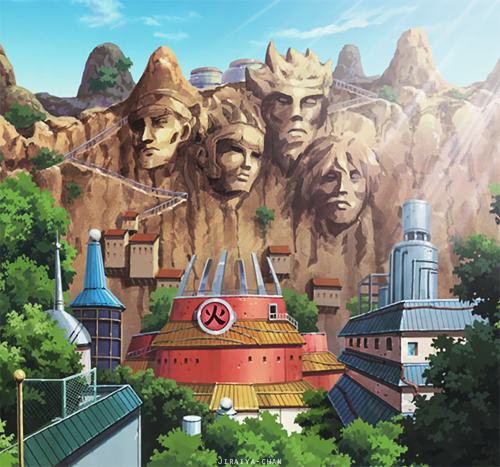

Konohagakure (木ノ葉隠れの里, Konohagakure no Sato; dosł. „Wioska Ukryta Wśród Liści Drzew”, znana również jako „Wioska Ukryta w Liściach” lub „Wioska Ukrytego Liścia”) to ukryta wioska położona w Kraju Ognia. Jako wioska jednego z Pięciu Wielkich Narodów Shinobi, Konohagakure posiada Kage jako swojego lidera, znanego jako Hokage, których było siedmiu w ciągu całej jej historii. Konoha położona jest w głębi lasu, tuż u podnóża góry, znanej jako Skała Hokage, która posiada wygrawerowane twarze wszystkich tych, którzy zajmowali lub zajmują to stanowisko. Choć jest generalnie uważana za najpotężniejszą wioskę ninja, Konoha cieszyła się wieloma latami spokoju i stabilności.
Sunagakure (砂隠れの里, Sunagakure no Sato; dosł. „Wioska Ukryta w Piasku”) — wioska założona przez pierwszego Kazekage i całkowicie podległa Daimyō Kraju Wiatru. Przez wiele lat była najpotężniejszą wioską na świecie, z czasem jednak ten tytuł został przejęty przez Konohagakure. Spory wpływ miała na to śmierć Trzeciego Kazekage. Obecnie sprzymierzeniec Konohy. Przywódca to Kazekage, którym obecnie jest Gaara. Cechami charakterystycznymi są burza piaskowa oraz to, że posiadali bijū, Shukaku. Wszystko łącznie z domami jest zrobione z piasku. Pochodzą stamtąd potężni shinobi tacy jak Temari, Kankurō czy też Gaara, obecny Kazekage (wymieniona trójka jest rodzeństwem).
Kirigakure (霧隠れの里, Kirigakure no Sato; dosł. „Wioska Ukryta we Mgle”) znajduje się w Kraju Wody i jest jedną z Pięciu Głównych Wiosek istniejących w tym świecie. Władze nad wioską sprawuje Mizukage, obecnie jest nim Szósty Mizukage Chojuro. Znakiem, który ninja noszą na swoich ochraniaczach są cztery skośne kreski - symbol mgły. Wioska znajduje się w niewielkiej dolinie, którą często spowija gęsta mgła. Wioska zasłynęła z niezwykle brutalnego egzaminu na genina, który miał na celu stworzenie doskonałego shinobi, pozbawionego uczuć i skrupułów, zdolnego do wykonania powierzonego mu zadania niezależnie od sytuacji.
Iwagakure (岩隠れの里, Iwagakure no Sato; dosł. „Wioska Ukryta w Skałach”) znajduje się w Kraju Ziemi. Na jej czele, jako jednej z pięciu głównych wiosek, stoi Tsuchikage (obecnie czwarta -Kurotsuchi). Iwagakure znana jest z twardej postawy swoich shinobi, gdy Tsuchikage wydaje rozkazy, wojownicy wykonują je, nawet gdy oznacza to śmierć. Wydaje się, że specjalizują się w technikach związanych z uwolnieniem ziemi. Wioskę otaczają skaliste pasma górskie, które stanowią naturalną twierdzę. Wioska ta jest dumna ze swej uprzywilejowanej pozycji i silnej obrony. Naokoło wioski znajdują się góry z wąskimi wodospadami. Budynki wykonane są ze skały i kamienia, mają kształt podwyższonych wież. Wiele budynków znajduje się na klifach połączonych siecią mostów. Pałac Tsuchikage ma dach w kształcie stożka, wydaje się być najwyższym budynkiem.
Kumogakure (雲隠れの里, Kumogakure no Sato; dosł. „Wioska Ukryta w Chmurach”) to wioska w kraju Błyskawic. Jest jedną z Pięciu Wielkich Wiosek Ninja. Lider Kumogakure to Raikage. Ninja z tej wioski wydają się specjalizować w technikach Błyskawic. Ninja z tej krainy wykorzystują japońskie miecze (Katany) jako standardową broń zamiast typowego Kunaia. Wioska leży na wysokiej górze i dosłownie jest ukryta w chmurach. Raikage mieszka w dużym budynku w najwyższych górach. Symbol ninja z Kumo Kumogakure, jak Iwagakure i Kirigakure, miało dwóch Jinchūriki: Yugito Nii i zapieczętowanego w niej dwu-ogoniastego Kota oraz Killera B z zapieczętowanym Ośmio-Ogoniastym Wołem. To sprawia, że wioska i jej mieszkańcy byli oburzeni, gdy oboje: Yugito i Killer B zostali schwytani przez Akatsuki. Yugito i Killer B mieli wielką kontrolę nad swoimi demonami, oboje byli w stanie w pełni przekształcić swoje ciała w demony.